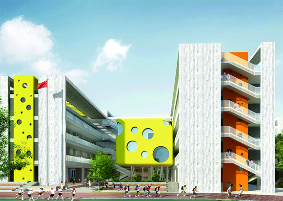
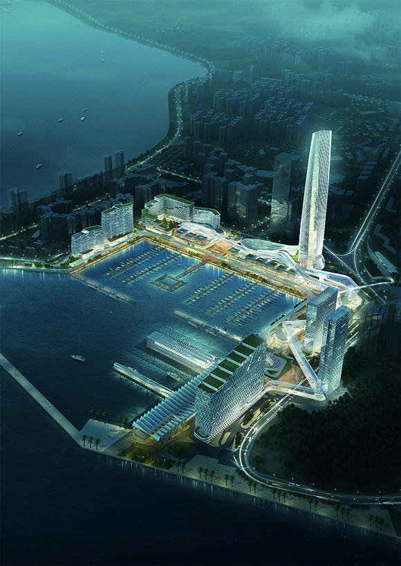
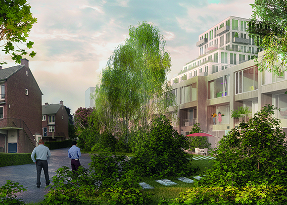
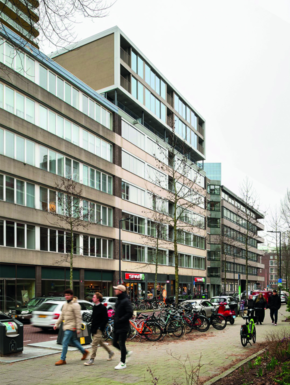
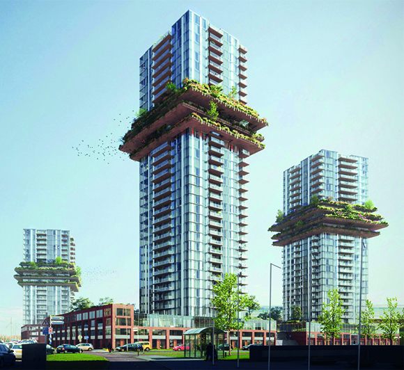
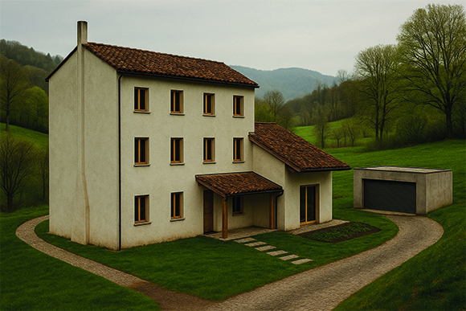
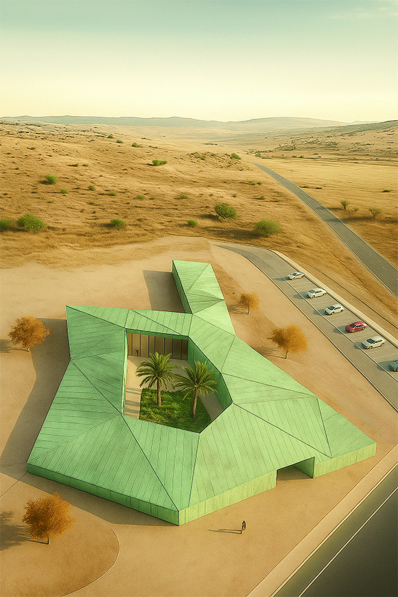
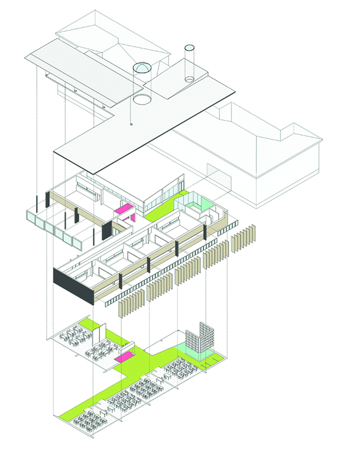
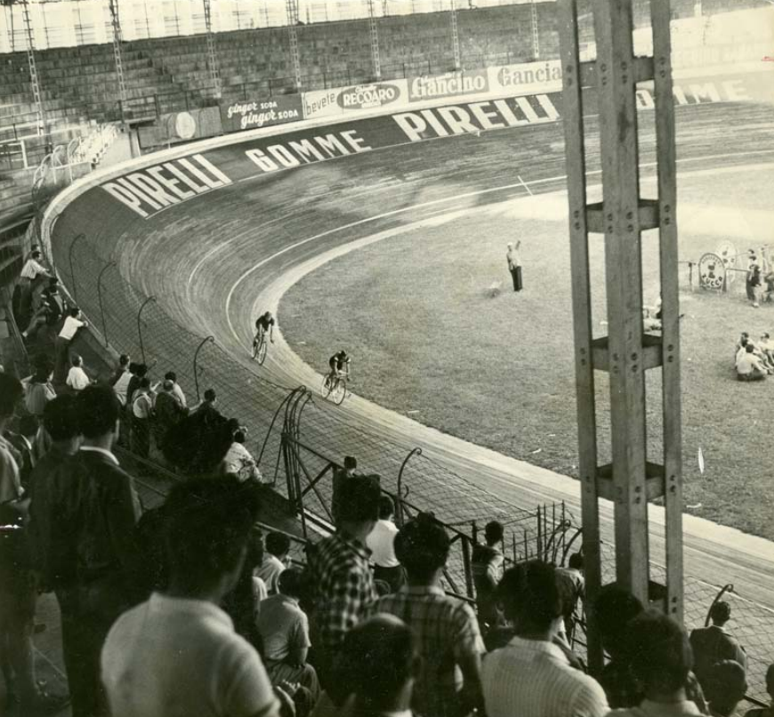

BAOSHUI PRIMARY SCHOOL (CN)

ZHUHAI PORT (CN)

VLEUTENSEVAART (NL)

GLASHAVEN (NL)

THE FLOWER TOWERS (NL)

SAN POLO (IT)

GREEN OASIS (IT)

BOLTIÈRE PRIMARY SCHOOL (IT)

VIGORELLI VELODROME (IT)
